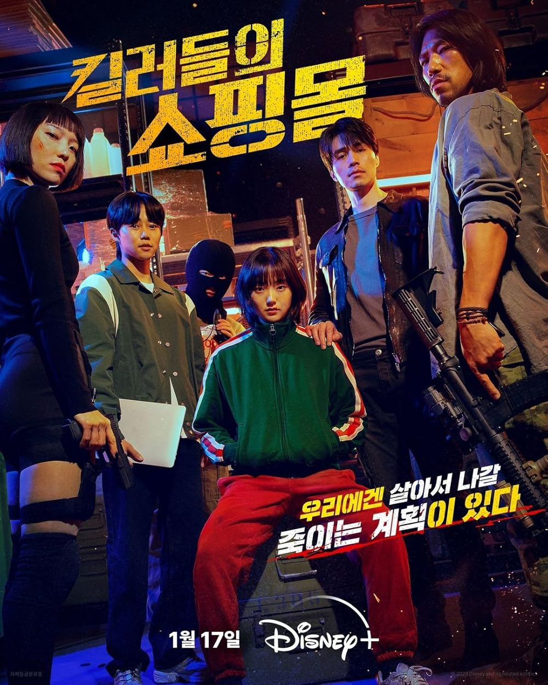
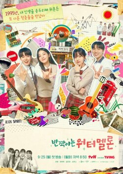
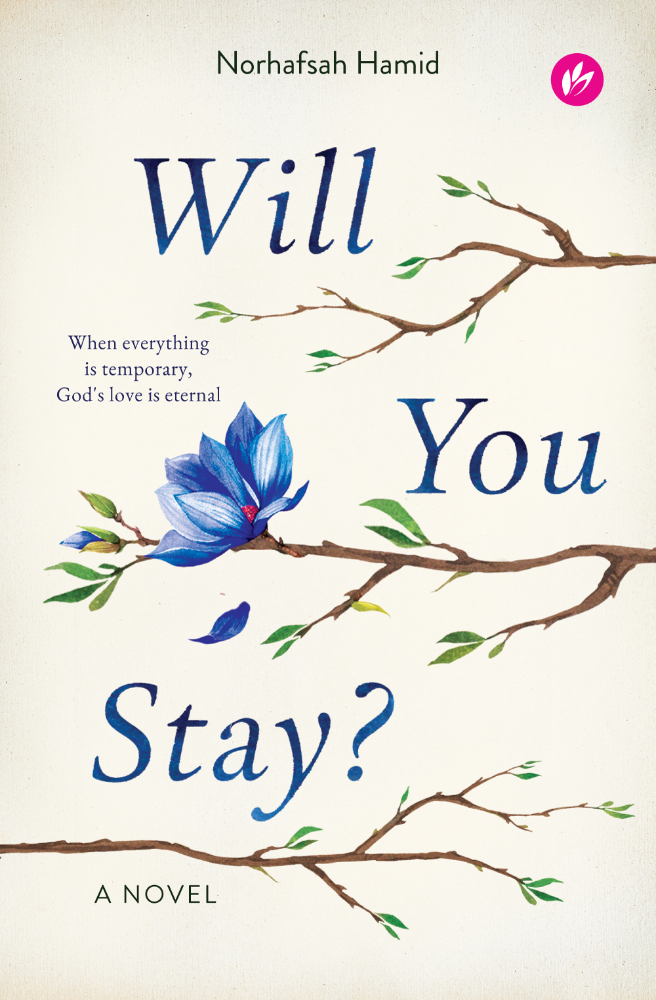
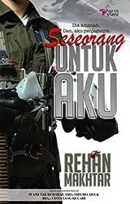
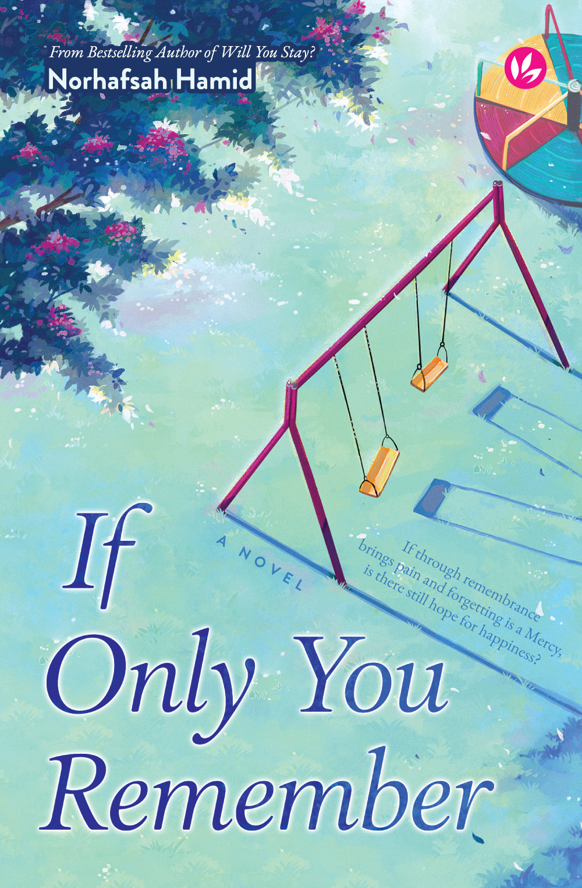
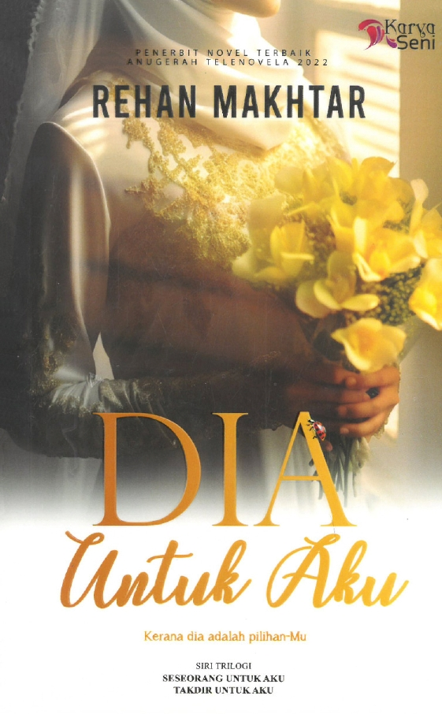

Call me Aula!
Call me Aula!
Here’s my On Repeat Spotify playlist! Enjoy the tunes that keep me motivated and happy.
Table 2: These KDramas are my top 3 recommendations!!
| NAME | GENRE | RATING | REVIEW |
|---|---|---|---|

QUEEN OF TEARS |
Romantic Comedy | 8/10 | Queen of Tears really caught my attention with its mix of heartfelt drama and light comedy. The chemistry between the leads felt genuine, and the emotional depth was moving. However, it sometimes tried to juggle too many themes at once. Still, its charm and strong performances made it worth watching. |
| 
A SHOP FOR KILLERS |
Action Drama | 10/10 | I enjoyed this one quite a bit. It's straightforward and packed with action. The story follows a young woman who, after her uncle's death, learns he was an arms dealer and must fend off various underworld figures attempting to seize control of the business. It's a classic cat-and-mouse action thriller that made for an entertaining afternoon. |
| 
TWINKLING WATERMELON |
Romance Teen, Musical Drama | 7/10 | Twinkling Watermelon was a delightful surprise. This sugary-sweet teen drama follows a time-traveling boy who befriends his young father and plays matchmaker for his future parents. Though overly cute at times, its charm shines through, especially with the heartwarming father-son friendship and lovable characters. A perfect feel-good watch! |
Table 3: Here are some of my favorite novels to read!
| NAME | GENRE | RATING | REVIEW |
|---|---|---|---|
| 
WILL YOU STAY? |
Fiction, Islamic, English book, Romance | 8/10 | This book masterfully combines themes of faith, love, loyalty, and friendship with humor and cheesy punchlines. Norhafsah Hamid offers a fresh take on romance through Shariah-compliant storytelling. Her works are perfect for younger readers to explore halal love and dating, making it a wonderful form of Dakwah. Highly recommended! |
| 
SESEORANG UNTUK AKU |
Fiction, Romance | 7/10 | Here’s my honest opinion about this book. Honestly, I didn’t expect it to be such an emotional rollercoaster. For first-timers, let me warn you—be ready. Seriously. The emotional turmoil, frustration, headaches, and anger you’ll feel while reading this are real. Just hang in there and take a deep breath! |
| 
IF ONLY YOU REMEMBER |
Fiction, Islamic, English book | 10/10 | Norhafsah Hamid never disappoints! This is my third book of hers, and I’m hooked. Despite a slightly rushed pacing, the way she connects the past and present is brilliant. I admire Sofea’s strength and aspire to be like her. A heartfelt, impactful read I’d absolutely recommend to everyone. I love her books so much. |
| 
DIA UNTUK AKU |
Fiction, Romance, Action | 8/10 | This book is light, with no heavy conflicts or intense emotional drama. There’s a small twist in the middle, along with some action from the three national warrior heroes, a touch of cuteness, romance, and family elements. It’s satisfying to see the trio working together. Perfectly suitable and enjoyable for beginners! |